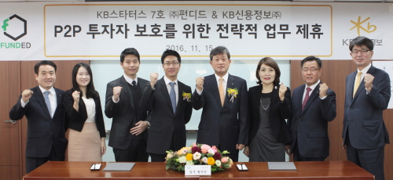

2016-11-15
부실 채권 발생시 KB신용정보에서 채권 추심업무 수행 및 채권 관리에 대한 컨설팅 제공 KB손해보험은 펀디드와 대출자를 피보험자로 하는 상환면제 상품 공동 개발

KB금융그룹은 계열사인 KB신용정보와 P2P대출 중계플랫폼 업체인 펀디드가 15일 용산구 KB신용정보 본사에서 부실채권에 추심업무 수행 및 채권관리 컨설팅 제공에 대한 MOU를 체결했습니다.
‘펀디드’는 지난 4월 KB금융그룹이 명동에 마련한 핀테크 스타트업 육성공간인 KB스타터스밸리에 입주한 P2P대출 중개플랫폼을 제공하는 스타트업입니다.
KB금융그룹은 계열사인 KB신용정보와 P2P대출 중계플랫폼 ‘펀디드’는 15일 용산구 KB신용정보 본사에서 부실채권에 추심업무 수행 및 채권관리 컨설팅 제공에 대한 MOU를 체결했습니다.
이번 제휴를 통해 펀디드는 채권 부도 시 KB신용정보에 채권 추심업무를 위탁해 투자자들의 원금 손실을 최소화할 수 있습니다. 동시에 KB신용정보가 제공하는 자문을 통해 종합적인 채권관리 체계를 확립해 더욱 안전한 투자 환경을 구축하게 되었습니다.
또한 KB손해보험은 ‘펀디드’와 대출자를 피보험자로 하는 상환면제 상품을 연내 제휴할 예정입니다. 이는 P2P대출업계에서는 최초로 시도되는 상품으로, 대출 고객이 사고로 인해 상해사망을 하거나 상해후유 장애가 50%를 넘을 시 보험금으로 피보험자 본인 채무를 우선 상환하게 되며, 만약 잔여보험금이 있을 경우에는 피보험자 본인 혹은 본인의 법정상속인에게 보험금을 지급하게 됩니다.
이 상품을 통해 P2P 투자고객은 대출고객이 갑작스러운 사고를 당할 경우 대출금을 상환하지 못하여 발생하는 리스크를 관리할 수 있습니다. 대출자 입장에서도 불의의 사고로 대출금을 상환하지 못하는 상황에 처할 경우 겪게 될 정신적 · 물질적 부담을 덜 수 있게 됐습니다.
금융 당국도 최근 ‘P2P대출가이드라인’을 발표하는 등 P2P 금융의 투자자 보호를 위해 노력하고 있습니다. ‘펀디드’와 KB금융 간 이번 제휴도 투자자의 원금 손실 리스크를 축소시켜 P2P금융을 건전한 핀테크 사업으로 성장시키고자 하는 양 사의 의지가 반영된 것입니다.